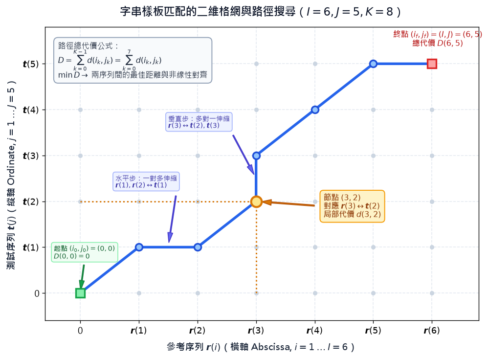
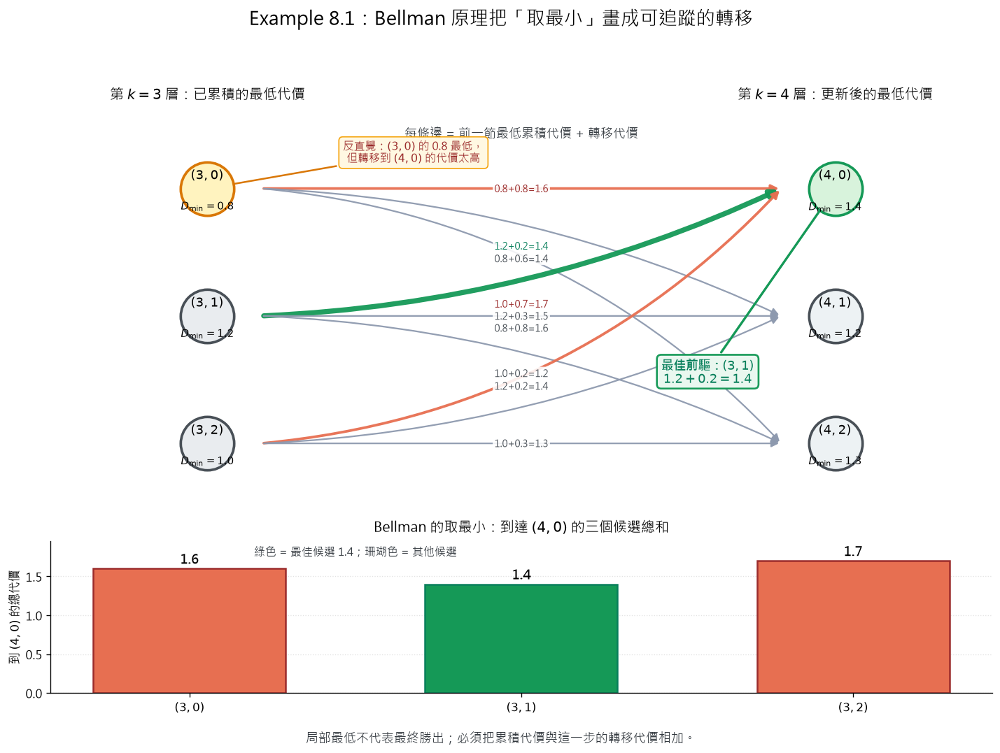
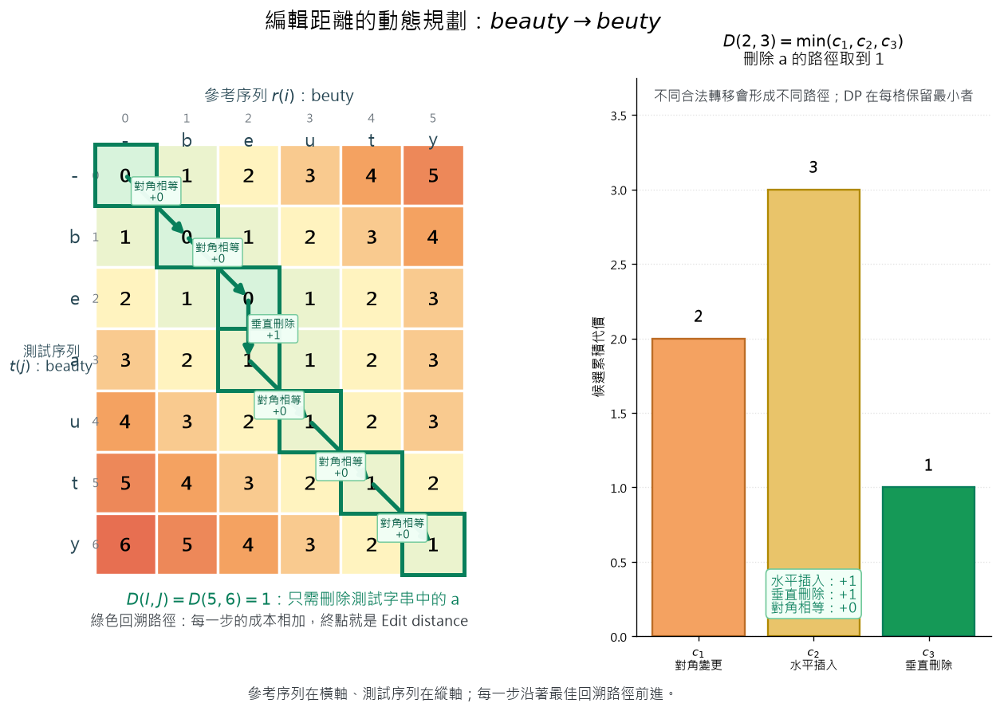
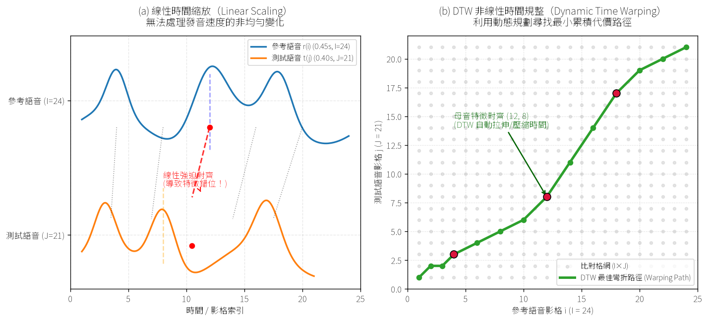
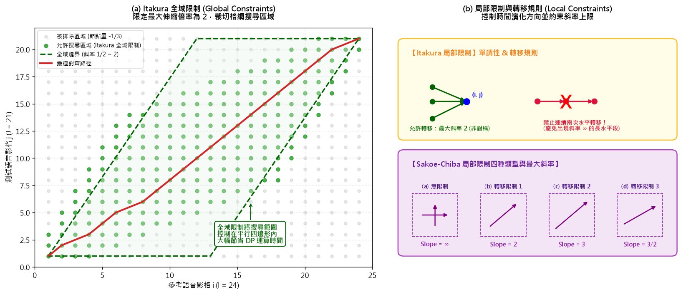
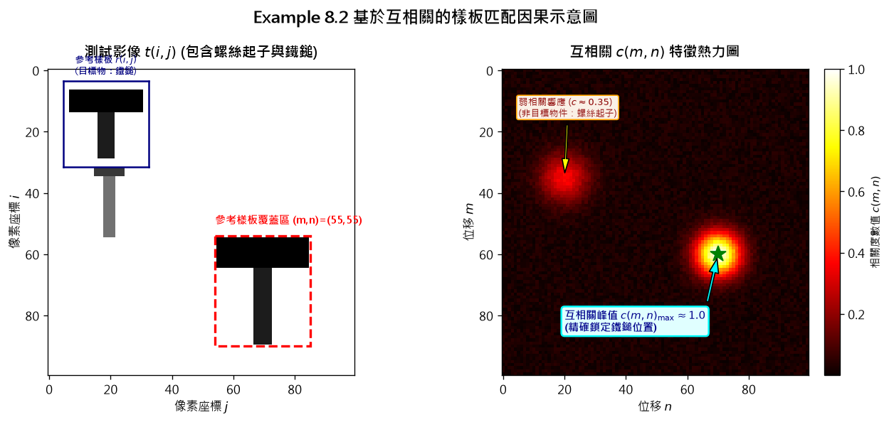
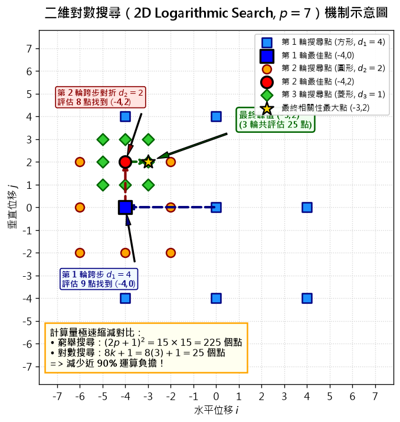
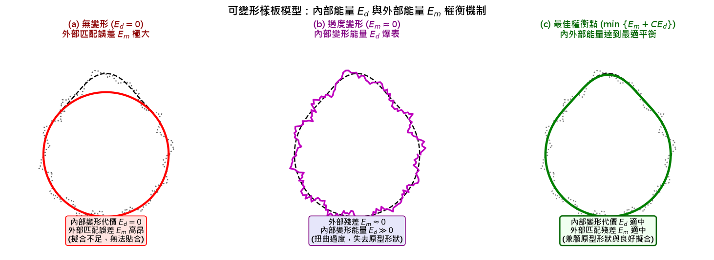
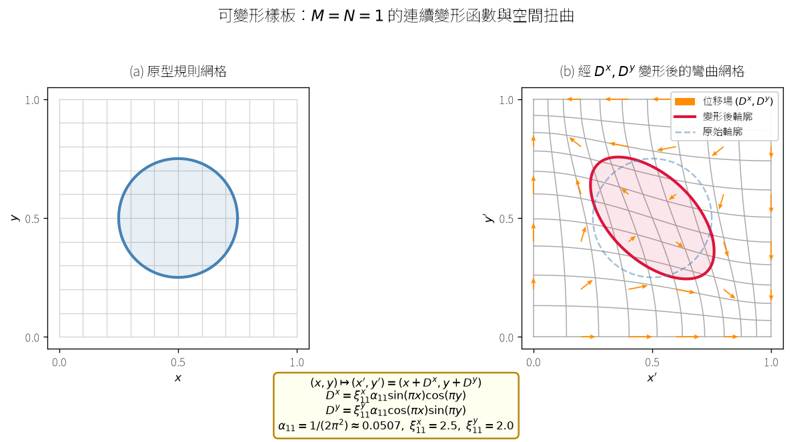
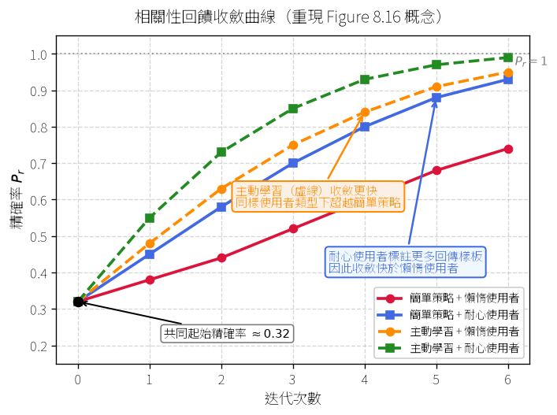

為什麼需要樣板匹配（Template Matching 動機）
▼一句話
樣板匹配（Template Matching）不再是把未知特徵向量丟進決策邊界分類，而是從一組已知的「參考樣板（Reference Templates）」中找出與未知「測試樣板（Test Pattern）」最契合的對象，並克服長度不等、語速伸縮、位置未知與幾何變形等傳統距離度量無法解決的真實變異。
是什麼
在傳統分類問題中，核心目標是將未知特徵向量指派給某個類別；而在樣板匹配中，我們已知一組參考樣板集合，目標是判定未知測試樣板與哪一個參考樣板「最匹配（matches best）」或計算出兩者間的相似程度。
典型的應用領域涵蓋四大類問題：
- 語音辨識 (Speech Recognition)：同一個人重複朗讀同一個詞彙時，發音速度快慢會使語音訊號的持續時間不同（有時長、有時短），但本質上皆為同一個詞彙。
- 文字字串辨識 (Written Text Matching)：感測器讀取或辨識錯誤可能造成字元替換、插入或遺漏，例如目標單字 "beauty" 可能被讀取為 "beety" 或 "beaut"。
- 場景分析與機器人視覺 (Scene Analysis / Robot Vision)：欲辨識的目標物體確實存在於影像場景中，但其在影像中的精確空間位置事先未知。
- 基於內容的影像檢索 (CBIR, Content-Based Image Retrieval)：使用者提供的形狀查詢往往無法與資料庫中的物體形狀完全精確吻合，存在彈性變形與輪廓差異。
為什麼／反直覺處
為什麼不能直接使用傳統的歐幾里得距離（Euclidean Norm）或 Frobenius 範數？
直覺上，若兩筆資料都能表示為特徵向量或矩陣，計算差值範數 $\|\boldsymbol{x} - \boldsymbol{y}\|$ 找最小值似乎最直接。然而在真實世界中：
- 維度與長度不同：測試樣板與參考樣板的特徵序列長度通常不同（$I \neq J$），兩個不同維度的向量根本無法直接相減計算歐氏距離。
- 非線性時間伸縮與形變：發音過程中的語速伸縮並非等比例均勻變化，空間中物體位置會平移，輪廓也有非剛性幾何形變。剛性的點對點相減無法捕捉這些對齊關係。
因此，樣板匹配必須依據不同問題的本質特性，設計專門的彈性對齊、相關性或能量最小化度量工具。
怎麼算 / 怎麼記
記憶口訣：「長度不同難相減，彈性對齊找最佳；位置未知相關找，形狀變形能量調」。
本章針對不同問題特性的解決架構對應如下：
- 序列與字串比對（長度不一與語速伸縮）：採用二維格網路徑搜尋、編輯距離與動態時間規整（DTW）（見 KP-2 至 KP-6）。
- 場景目標定位（未知空間位置）：採用互相關（Cross-Correlation）樣板匹配（見 KP-7、KP-8）。
- 形狀彈性比對（非剛性幾何形變）：採用可變形樣板模型（Deformable Templates）（見 KP-9、KP-10）。
- 資料庫以圖檢索（使用者查詢落差）：採用相關性回饋（Relevance Feedback）與主動學習（見 KP-11）。
🎯 互動實驗：訊號位移與縮放對歐氏距離的影響（樣板匹配動機）
這在做什麼：展示當測試訊號 $t(x)$ 是參考樣板 $r(x)$ 經過「空間/時間位移 $\delta$」或「尺度伸縮 $\alpha$」的真實變體時（$t(x) = r(\alpha x - \delta)$），傳統的剛性歐幾里得距離 $\|\boldsymbol{r} - \boldsymbol{t}\|$ 會如何劇烈失真。
怎麼操作：拖曳「位移量 $\delta$ (shift)」與「縮放係數 $\alpha$ (scale)」滑桿，或點選上方的預設情境按鈕。
觀察什麼：當 $\delta = 0, \alpha = 1$ 時兩訊號完全重合，距離為 $0$。但只要有微小的位移或伸縮，剛性點對點歐氏距離就會急劇飆升（紅色陰影誤差面積迅速擴大），即使訊號本質上來自同一個物件。這解釋了為什麼樣板匹配必須發展彈性對齊與動態搜尋機制。
理論基準：取樣點 $x_k$ 上的離散歐氏距離為 $\|\boldsymbol{r} - \boldsymbol{t}\| = \sqrt{\sum_{k=1}^N (r(x_k) - t(x_k))^2}$。在 $\delta = 0, \alpha = 1$ 時理論值精確為 $0.000$。
在樣板匹配（Template Matching）問題中，為什麼通常不能直接計算測試樣板與參考樣板之間的歐幾里得距離（Euclidean Distance）來判斷最相近的樣板？
字串樣板匹配：格網、路徑與代價
▼
🤖 AI 生圖可用：重繪此示意圖的提示詞（結構化）
WHAT: A 2D lattice coordinate grid with reference sequence r(i) of length I=6 on the horizontal abscissa and test sequence t(j) of length J=5 on the vertical ordinate, featuring an 8-node piecewise linear path connecting (0,0) to (6,5) with explicit node callouts.
WHY: Demonstrates how sequence matching between unequal-length strings (I != J) is formulated as finding a minimum-cost path on a 2D grid, where the path geometrically achieves non-linear elastic warping and pairwise element correspondence rather than rigid linear alignment.
MUST show:
- Horizontal x-axis labeled with reference sequence elements r(1) through r(6) and vertical y-axis labeled with test sequence elements t(1) through t(5).
- Coordinate grid intersections representing all candidate pairing nodes (i, j).
- A highlighted monotonic path with K=8 nodes starting from (0,0) to (6,5), traversing (1,1), (2,1), (3,2), (3,3), (4,4), (5,5).
- A featured callout on node (3,2) with projection lines indicating the pairing r(3) <-> t(2) and its associated local cost d(3,2).
- Clear annotations of horizontal step (one-to-many stretching) and vertical step (many-to-one compression).
- A summary box showing the overall path cost formula D = sum_{k=0}^{K-1} d(i_k, j_k).
AVOID: A rigid straight diagonal line implying equal-length linear scaling, abstract unconnected flowchart boxes, missing sequence axis labels, or non-monotonic backward-moving paths.
STYLE: Clean scientific vector infographic, crisp 2D grid structure, modern royal blue and amber accent palette, legible typography with mathematical symbols, pure white background.
一句話
將兩個長度不同（$I \neq J$）的字串特徵序列匹配問題，建構為二維格網（2D Grid）上的路徑搜尋；在格網中尋找總累積代價最小的路徑，同時實現了兩序列間的最佳非線性元素對齊（Warping / Alignment）與距離度量。
是什麼
考慮一組參考樣板特徵向量序列 $\boldsymbol{r}(i), i=1,2, \ldots, I$ 與測試樣板特徵向量序列 $\boldsymbol{t}(j), j=1,2, \ldots, J$，一般情況下兩序列長度不同（$I \neq J$）。
為了建立兩序列間的距離度量，我們建構一個二維格網（2D Grid）：
- 橫軸（Abscissa, $i$-軸）：放置參考序列 $\boldsymbol{r}(i)$ 的各個元素。
- 縱軸（Ordinate, $j$-軸）：放置測試序列 $\boldsymbol{t}(j)$ 的各個元素。
- 節點與局部代價：格網上的節點 $(i, j)$ 代表將 $\boldsymbol{r}(i)$ 與 $\boldsymbol{t}(j)$ 建立對應關係，並關聯一個局部代價 $d(i, j)$，用以衡量兩元素間的距離。
- 路徑 (Path)：從起始節點 $(i_0, j_0)$ 到終止節點 $(i_f, j_f)$ 的有序節點集合： $$\left(i_{0}, j_{0}\right),\left(i_{1}, j_{1}\right),\left(i_{2}, j_{2}\right), \ldots,\left(i_{f}, j_{f}\right)$$
- 路徑總代價 (Overall Cost $D$)：沿路徑上 $K$ 個節點的局部代價總和： $$D=\sum_{k=0}^{K-1} d\left(i_{k}, j_{k}\right)$$ 到達節點 $(i_k, j_k)$ 的累積代價記為 $D(i_k, j_k)$，慣例定義 $D(0,0)=0$ 且 $d(0,0)=0$。
- 完整路徑 (Complete Path)：起訖點滿足 $\left(i_{0}, j_{0}\right)=(0,0)$ 且 $\left(i_{f}, j_{f}\right)=(I, J)$。
兩序列間的距離定義為所有可能路徑中的最小總代價 $D$。此最小代價路徑同時給出了兩序列間的最佳逐點對應（Alignment）。
本架構包含以下常見變形：
- 轉移代價 (Transition Cost)：代價不僅與節點有關，還取決於由哪一個前驅節點 $(i_{k-1}, j_{k-1})$ 轉移而來，寫為 $d(i_k, j_k \mid i_{k-1}, j_{k-1})$，總代價為 $D = \sum_{k} d(i_k, j_k \mid i_{k-1}, j_{k-1})$。
- 乘法代價 (Multiplicative Cost)：在特定機率模型下，總代價可定義為連乘積 $D = \prod_{k} d(i_k, j_k \mid i_{k-1}, j_{k-1})$。
- 放寬端點限制 (Relaxed End Point Constraints)：不強制起終點必須精確為 $(0,0)$ 與 $(I,J)$。
- 最大化目標：若 $d$ 代表相似度，則尋找總得分最大化的路徑。
為什麼／反直覺處
為什麼「在格網上找路徑」等價於「序列對齊」？
因為序列長度不同（$I \neq J$），無法簡單進行一對一剛性配對。格網上的路徑以折線前進的方式，允許「一對多」或「多對一」的彈性配對，精確模擬了時間上的非線性拉伸與壓縮（Warping）。
然而，若採用窮舉搜尋（Exhaustive Search）列舉所有可能的完整路徑，路徑數量會隨著 $I, J$ 的增長產生組合爆炸（指數級複雜度）。因此必須引入貝爾曼最適性原理與動態規劃（Dynamic Programming，見 KP-3）來高效求解最佳路徑。
怎麼算 / 怎麼記
以原文書 Figure 8.1 的真實範例為例：
- 參考序列長度 $I=6$，測試序列長度 $J=5$。
- 格網中一條完整路徑包含 $K=8$ 個節點：$(0,0) \to (1,1) \to (2,1) \to (3,2) \to (3,3) \to (4,4) \to (5,5) \to (6,5)$。
- 其中節點 $(3,2)$ 代表將參考序列第 3 個元素 $\boldsymbol{r}(3)$ 對應至測試序列第 2 個元素 $\boldsymbol{t}(2)$。
- 路徑的總代價即為這 8 個節點的代價總和：$D = \sum_{k=0}^{7} d(i_k, j_k)$。
🎯 互動實驗：字串樣板匹配的二維格網與路徑搜尋
這在做什麼：將參考序列 $\boldsymbol{r}(i)$（長度 $I=6$）與測試序列 $\boldsymbol{t}(j)$（長度 $J=5$）放置於二維格網的橫縱軸，透過逐步點選格點建立單調路徑，體會「格網路徑即為序列彈性對齊（Warping）」的數學機制。
怎麼操作：從起點 $(0,0)$ 開始，直接點擊畫面上綠色高亮的相鄰格點（向右、向上或對角）逐步走到終點 $(6,5)$。亦可點選快捷按鈕載入課本路徑或比對 DP 最優解。
觀察什麼：水平轉移代表參考序列一對多拉伸，垂直轉移代表測試序列多對一壓縮。觀察路徑上各節點局部代價 $d(i,j)$ 的累加過程，並點擊「顯示 DP 最佳路徑」比較自己的決策與全域最佳解的差距。
理論基準：完整路徑總代價為 $D = \sum_{k=0}^{K-1} d(i_k, j_k)$。動態規劃能以貝爾曼最適性原理找出保證最小代價 $D^* = \min_{\text{paths}} D$。
在序列樣板匹配的二維格網（2D Grid）架構中，若參考序列 r(i) 長度為 I，測試序列 t(j) 長度為 J，下列關於路徑與代價的敘述何者正確？
Bellman 最適性原理與動態規劃
▼
🤖 AI 生圖可用：重繪此示意圖的提示詞（結構化）
WHAT: 左右兩層的節點轉移圖。左側是第 k=3 層的三個垂直排列節點，右側是第 k=4 層的三個垂直排列節點；每個左側節點連到每個右側節點，底部附一個三柱狀比較圖呈現到 (4,0) 的候選總和。 WHY: 讓讀者看懂 Bellman 動態規劃的「取最小」是如何發生：局部累積代價最低的 (3,0) 不一定勝出，因為必須把前一節的累積代價與轉移代價相加；到 (4,0) 時，(3,1) 以 1.2+0.2=1.4 勝過 1.6 與 1.7。 MUST show: 第 k=3 層節點 (3,0)、(3,1)、(3,2) 及其 D_min 值 0.8、1.2、1.0；第 k=4 層節點 (4,0)、(4,1)、(4,2)；全部九條合法轉移邊；每條邊標出「累積代價+轉移代價=總和」；Table 8.1 的真實轉移代價 0.8/0.6/0.8、0.2/0.3/0.2、0.7/0.2/0.3；到 (4,0) 的三個候選 1.6、1.4、1.7；用粗綠色邊與柱狀圖突顯 (3,1) 到 (4,0) 的 1.4。 AVOID: 不要只把 Bellman、DP、節點等名詞排成方框再用箭頭連接；不要使用亂數或虛構數值；不要省略九條轉移或任何總和標籤；不要讓 (3,0) 看起來因為自身 0.8 最低就直接成為勝者；不要使用深色背景、裝飾性圖示或無因果意義的 3D 效果。 STYLE: flat vector / scientific plot / white background / 高對比深灰節點、琥珀色局部最低節點、珊瑚色候選邊、翡翠綠最佳邊；精確數字清楚可讀、線條乾淨、教科書圖解風格。
一句話
把「走到每個節點的最低累積代價」逐步算出來，就能用 Bellman 原理組出整條最低代價路徑。
是什麼
若從初始節點 $\left(i_{0},j_{0}\right)$ 到終點 $\left(i_{f},j_{f}\right)$ 的最佳路徑被限制必須經過中間節點 $(i,j)$，Bellman 最適性原理表示為：
$$ \left(i_{0},j_{0}\right)\xrightarrow[(i,j)]{\text{opt}}\left(i_{f},j_{f}\right) =\left(i_{0},j_{0}\right)\xrightarrow{\text{opt}}(i,j) \oplus(i,j)\xrightarrow{\text{opt}}\left(i_{f},j_{f}\right) $$
其中 $\oplus$ 表示把兩段路徑串接起來：整條受限最佳路徑，等於從起點到 $(i,j)$ 的最佳前段，加上從 $(i,j)$ 到終點的最佳後段。
設路徑的第 $k$ 個節點為 $\left(i_{k},j_{k}\right)$，到達它的最低累積代價為 $D_{\min }\left(i_{k},j_{k}\right)$。每個節點只允許從符合局部限制的前驅節點轉移，因此遞迴式為：
$$ D_{\min }\left(i_{k},j_{k}\right)=\min _{i_{k-1},j_{k-1}} \left[D_{\min }\left(i_{k-1},j_{k-1}\right)+ d\left(i_{k},j_{k}\mid i_{k-1},j_{k-1}\right)\right] \tag{8.1} $$
這個最小值只在允許的前驅集合中搜尋；全域限制則進一步限定實際要參與最佳化的格網節點。逐節點算出最低代價後，從終點沿著造成最小值的轉移反向追蹤，就能還原最低代價路徑與測試樣板、參考樣板之間的節點對應。
為什麼／反直覺處
看似要比較所有從起點走到終點的完整路徑，但 Bellman 原理告訴我們：只要某條最佳路徑已經以最佳方式到達 $(i,j)$，後面就不必重新考慮它之前的所有走法，只需尋找從 $(i,j)$ 到終點的最佳後段。這個「最佳子結構」讓動態規劃可以重用已算出的累積代價。
另一個容易忽略的地方是，節點不是任意相連：局部限制決定某個節點可以從哪些前驅進入，全域限制則可能讓部分格網節點根本不參與搜尋。因此，某條在早期看起來不錯的路徑也可能無法延伸；Example 8.1 中，起源於 $(0,1)$ 的路徑在 $k=3$ 之後就不再存活。
怎麼算 / 怎麼記
可以記成「前一節的最低累積代價，加上這一步的轉移代價，再從允許前驅中取最小」。Example 8.1 已知第 $k=3$ 節各節點的最佳累積代價：
$$ D_{\min }(3,0)=0.8,\qquad D_{\min }(3,1)=1.2,\qquad D_{\min }(3,2)=1.0 \tag{8.2} $$
要計算節點 $(4,0)$，把三個可能前驅的累積代價與 Table 8.1 的轉移代價相加：
- 由 $(3,0)$ 轉移：$0.8+0.8=1.6$。
- 由 $(3,1)$ 轉移：$1.2+0.2=1.4$。
- 由 $(3,2)$ 轉移：$1.0+0.7=1.7$。
取最小值 $1.4$，所以到達 $(4,0)$ 的最佳路徑要接在 $(3,1)$ 之後；同一例中，$(4,1)$ 與 $(4,2)$ 的最佳累積代價分別是 $1.2$ 與 $1.3$。最後從終點反向回溯每一步選中的前驅，便能找回完整最佳路徑。
🎯 互動：Bellman 最適性原理與動態規劃
這在做什麼：重現 Example 8.1 的三個第 $k=3$ 節點到三個第 $k=4$ 節點的轉移，對每個終點實際套用 Bellman 遞迴式，找出最低累積代價與最佳前驅。
怎麼操作：調整三個 $D_{\min}(3,j_3)$ 起始累積代價，或直接修改 3×3 的轉移代價矩陣；每次輸入都會重新計算並高亮各終點的最佳前驅。
觀察什麼：到 $(4,0)$ 時，$(3,0)$ 自己的 0.8 雖然最低，卻因為轉移代價 0.8 而得到 1.6；$(3,1)$ 以 1.2+0.2=1.4 勝出，說明局部最低不等於最終最低。
理論基準：每個終點 $(4,j_4)$ 都使用 $$D_{\min}(4,j_4)=\min_{j_3}\left[D_{\min}(3,j_3)+d(4,j_4\mid 3,j_3)\right].$$ 預設 Table 8.1 與 $D_{\min}(3,\cdot)=(0.8,1.2,1.0)$ 時，結果必須是 $(1.4,1.2,1.3)$，依矩陣逐項比較得到的最佳前驅依序為 $(3,1),(3,2),(3,2)$。
| $d$ | $(4,0)$ | $(4,1)$ | $(4,2)$ |
|---|---|---|---|
| $(3,0)$ | |||
| $(3,1)$ | |||
| $(3,2)$ |
若最佳路徑被限制必須經過 $(i,j)$，Bellman 最適性原理表示什麼？
Example 8.1 中，計算節點 $(4,0)$ 時，三個候選前驅的總代價分別為 $1.6$、$1.4$、$1.7$，最佳路徑應從哪個節點接入？
編輯距離（Edit Distance）
▼
🤖 AI 生圖可用：重繪此示意圖的提示詞（結構化）
WHAT: 左側為完整的編輯距離 DP 矩陣，參考序列 beuty 放在橫軸、測試序列 beauty 放在縱軸，每個格子顯示 D(i,j) 數值；右側為在刪除 a 的關鍵格子比較三個候選成本的小型柱狀圖。 WHY: 讓讀者看懂同一組字串的合法對齊會形成不同路徑，DP 在每個格子比較對角相等／對角變更、水平插入、垂直刪除三種轉移並保留最小值；綠色回溯路徑最後累加得到 D(I,J)=1。 MUST show: 完整 7×6 的 D(i,j) 表格數值；參考 r(i)=beuty 的欄標與測試 t(j)=beauty 的列標；從 (0,0) 到 (5,6) 的綠色回溯箭頭；每一步標示「對角相等/+0」或「垂直刪除/+1」；關鍵刪除 a 的格子顯示 c1=2、c2=3、c3=1 並以柱狀圖呈現取最小；終點清楚標成 D(5,6)=1。 AVOID: 不要畫成只有文字的方框流程圖；不要省略 DP 表格中的任何數值；不要用亂數填表；不要把水平插入、垂直刪除與對角轉移的標籤放錯；不要使用看不出起點、終點或回溯方向的裝飾性曲線。 STYLE: flat vector / scientific plot / white background / 淡綠到珊瑚色的數值熱度格、翡翠綠最佳路徑、清楚的黑灰數字與深藍序列標頭；高可讀性、乾淨的數學教學圖表風格。
一句話
編輯距離是在所有可能的對齊方式中，找出把字串 $A$ 變成字串 $B$ 所需變更、插入與刪除的最小總成本。
是什麼
對由有順序符號組成的兩個樣板 $A$ 與 $B$，編輯距離 $D(A,B)$ 定義為：
$$ D(A,B)=\min _{j}[C(j)+I(j)+R(j)] \tag{8.3} $$
其中 $j$ 遍歷所有把 $A$ 變成 $B$ 的符號變化組合，$C$ 是變更符號的數量，$I$ 是插入符號的數量，$R$ 是刪除符號的數量。這三類錯誤分別對應：符號辨識錯誤（例如把「beauty」辨識成「befuty」）、插入錯誤（例如「bearuty」），以及刪除錯誤（例如「beuty」）。
計算時把參考樣板放在橫軸、測試樣板放在縱軸，形成格網。每個節點 $(i,j)$ 只允許由三個前驅到達：
- $(i-1,j)$。
- $(i-1,j-1)$。
- $(i,j-1)$。
完整路徑從 $(0,0)$ 出發，且 $D(0,0)=0$。對角轉移代表兩個位置的符號相互對齊，其成本為：
$$ d(i,j\mid i-1,j-1)= \begin{cases} 0 & \text{if } r(i)=t(j)\\ 1 & \text{if } r(i)\neq t(j) \end{cases} $$
因此符號相同時是相等對齊，符號不同時是一次變更。水平與垂直轉移的成本都為 $1$：
$$ d(i,j\mid i-1,j)=d(i,j\mid i,j-1)=1 $$
教材將水平轉移解讀為插入符號、垂直轉移解讀為刪除符號。每個節點選擇三種轉移中累積成本最低者，最後的 $D(I,J)$ 就是 $D(A,B)$。
為什麼／反直覺處
字串長度不同時，單純逐字比較不夠，因為插入與刪除的位置也要一起決定；格網路徑正好把「符號如何對齊」和「每一步要付多少成本」放在同一個最佳化問題裡。即使兩個字串之間有多種改法，例如把「beuty」變成「beauty」可以直接插入「a」，也可以先變更再插入，編輯距離會在所有可能組合中取最小值。
基本編輯距離的另一個反直覺限制是它不考慮字串長度：兩個字串只差一個符號時，長度為 $2$ 或長度為 $50$ 都可能得到編輯距離 $1$。教材提到「beauty」與「beuaty」以及「besrty」在基本編輯距離下都可能是 $2$，但 Markov Edit distance 會利用相鄰符號的局部互動，讓前者因為像局部重新排列而得到較低成本。
怎麼算 / 怎麼記
先處理只能靠插入或刪除到達的邊界，再對每個內部節點比較三個候選值。初始化為：
$$ D(0,0)=0 $$
- 對 $i=1$ 到 $I$，設定 $D(i,0)=D(i-1,0)+1$。
- 對 $j=1$ 到 $J$，設定 $D(0,j)=D(0,j-1)+1$。
- 對每個 $i=1,\ldots,I$ 與 $j=1,\ldots,J$，計算：
$$ \begin{aligned} c_1&=D(i-1,j-1)+d(i,j\mid i-1,j-1),\\ c_2&=D(i-1,j)+1,\\ c_3&=D(i,j-1)+1,\\ D(i,j)&=\min(c_1,c_2,c_3). \end{aligned} $$
全部節點填完後，令 $D(A,B)=D(I,J)$；再沿著造成最小值的前驅反向回溯，就得到一條最佳對齊路徑。口訣是「對角看相等、左右上下付一；三路取最小，終點看 $D(I,J)$」。這個基本方法也稱為 Levenstein distance，後續可依應用調整變更成本，或加入合併、拆分與雙字母替換等操作。
🎯 互動：編輯距離（Edit Distance）即時計算
這在做什麼：把參考字串 $A$ 放在橫軸、測試字串 $B$ 放在縱軸，逐格計算把兩個字串對齊所需的最小編輯成本。
怎麼操作：修改兩個文字輸入框（每個最多 10 個字元）；畫面會重新建立完整 $D(i,j)$ 表格，並從終點反向追蹤最佳路徑。
觀察什麼：對角相等不增加成本，對角變更、水平插入與垂直刪除各增加 1；不同字串與不同錯誤組合會改變回溯路徑。
理論基準：每格使用 $$D(i,j)=\min\left\{D(i-1,j-1)+d(i,j\mid i-1,j-1),D(i-1,j)+1,D(i,j-1)+1\right\},$$ 其中 $$d(i,j\mid i-1,j-1)=\begin{cases}0 & \text{if } r(i)=t(j)\\\\1 & \text{if } r(i)\neq t(j)\end{cases}.$$ 預設 $A=\text{beuty}$、$B=\text{beauty}$ 時，理論結果必須是 $D(A,B)=1$。
在 Edit distance 的格網中，$D(i,j)$ 比較三個候選值的主要原因是什麼？
基本 Edit distance 的哪個限制，會讓長度為 $2$ 與長度為 $50$、但都只差一個符號的字串得到相同距離 $1$？
語音辨識中的動態時間規整（DTW）：問題設定與特徵
▼
🤖 AI 生圖可用：重繪此示意圖的提示詞（結構化）
WHAT: Two-panel side-by-side comparative diagram comparing linear time scaling versus dynamic time warping (DTW) non-linear alignment on a speech feature vector grid.
WHY: Help readers visually contrast why linear scaling fails to align non-uniform speech speed variations (causing misaligned acoustic feature peaks), whereas DTW's non-linear DP grid path stretches and compresses time frames to achieve precise feature alignment.
MUST show:
- Left panel showing linear scaling with parallel straight mapping lines connecting two speech waveforms of different durations (I=24 vs J=21), displaying misaligned feature peaks labeled in red ("線性強迫對齊，導致特徵錯位").
- Right panel showing an I=24 by J=21 alignment grid with a green curved non-linear warping path passing through DP grid points, with keypoint callout at (12, 8) matching acoustic feature peaks accurately ("母音特徵對齊 (12, 8)").
- Clear axis labels (Reference frame i on x-axis, Test frame j on y-axis).
AVOID: Abstract flowchart boxes, unaligned arbitrary curves without grid points, dark backgrounds, illegible text overlays.
STYLE: Scientific infographic, clean flat vector style, white background, high contrast red/green/blue color scheme, clear Chinese annotations.
一句話
DTW 解決了同一個人說同一個詞彙時，因語速快慢所產生的「高度非線性時間伸縮」問題；透過將語音切影格並提取傅立葉轉換特徵向量，將時間對齊轉化為在格網上利用動態規劃尋找最佳非線性路徑的問題。
是什麼
在獨立詞辨識（Isolated Word Recognition, IWR）中，參考樣板與測試樣板分別表示為特徵向量序列 $\boldsymbol{r}(i), i = 1, \ldots, I$ 與 $\boldsymbol{t}(j), j = 1, \ldots, J$。
以傅立葉轉換（DFT）特徵為例，採樣率為 22,050 Hz 的語音訊號被切割為長度 $t_f = 512$ 採樣點、重疊 $t_0 = 100$ 採樣點的連續影格。第 $i$ 個影格樣點 $x_i(n), n=0,\ldots,511$ 的 DFT 為：
$$X_{i}(m)=\frac{1}{\sqrt{512}} \sum_{n=0}^{n=511} x_{i}(n) \exp \left(-j \frac{2 \pi}{512} m n\right), \quad m=0, \ldots, 511$$
由於高頻 DFT 係數的振幅極小，對訊號貢獻微弱，故僅選取前 $l$ 個（如 $l=50$）低頻振幅係數組成特徵向量：
$$\boldsymbol{r}(i)=\left[\begin{array}{c} X_{i}(0) \\ X_{i}(1) \\ \vdots \\ X_{i}(l-1) \end{array}\right], \quad i=1, \ldots, I$$
完成了特徵提取後，將參考向量序列 $\boldsymbol{r}(i)$ 置於橫軸，測試向量序列 $\boldsymbol{t}(j)$ 置於縱軸。一個完整的 DTW 最佳對齊搜尋系統需要確立以下四大要素：
- 端點限制 (End-point constraints)：確定路徑起點與終點的搜尋範圍。
- 全域限制 (Global constraints)：定義網格中允許搜尋最佳路徑的整體區域。
- 局部限制 (Local constraints)：規定相鄰節點間允許的轉移方向與步幅。
- 轉移代價 (Cost $d$ for transitions)：計算節點間特徵向量的比對距離。
為什麼／反直覺處
為什麼不能直接使用線性時間伸縮（Linear Time Scaling）或一般的字串比對？
當同一個人朗讀同一個字（例如 "love"）兩次時，每次發音的總時長不同（如 0.45 秒 vs 0.40 秒）。更重要的是，這種時間變化絕非均勻的線性伸縮，而是高度非線性的彎折（warping）——發音過程中，某些音節可能被拉長，而某些子音過渡卻非常短促。
延續 KP-2 在格網上尋找路徑的概念，DTW 允許測試特徵在時間軸上進行非線性的「拉伸」（一個測試影格對應多個參考影格）或「壓縮」（多個測試影格對應一個參考影格），並透過動態規劃找出全域累積代價最小的對齊路徑。
怎麼算 / 怎麼記
以原文書中真實的語音採樣數據為例：
- 參考樣板 $\boldsymbol{r}$：語音詞彙 "love"（持續 0.45 秒），經 $t_f=512, t_0=100$ 切影格後共有 $I=24$ 個影格。
- 測試樣板 1 ($\boldsymbol{t}_1$)：同說話者朗讀的詞彙 "love"（持續 0.40 秒），切影格後有 $J=21$ 個影格。
- 測試樣板 2 ($\boldsymbol{t}_2$)：同說話者朗讀的另一詞彙 "kiss"，切影格後有 $J=23$ 個影格。
比對時，將參考序列 $\boldsymbol{r}(i)$ 放在橫軸 ($i=1\dots 24$)，測試序列 $\boldsymbol{t}(j)$ 放在縱軸 ($j=1\dots 21$ 或 $23$)，網格上的每個交點 $(i,j)$ 就代表參考第 $i$ 影格與測試第 $j$ 影格的特徵向量比對位置。
🎯 互動：DTW 語音訊框切割與影格數計算
這在做什麼：展示語音訊號如何透過滑動視窗切割為連續、重疊的影格（Time Frames），並即時計算經特徵提取後的總影格數 $I$。
怎麼操作：拖曳滑桿調整訊框長度 $t_f$、重疊長度 $t_0$ 與總訊號長度 $N$，觀察波形下方的切片區塊與重疊深淺。
觀察什麼：當重疊 $t_0$ 增加時，步長 $\Delta = t_f - t_0$ 變小，切出的總影格數 $I$ 會顯著增加；當 $t_0 = 0$ 時影格無重疊，影格數最少。
理論基準：課本範例取採樣率 $22,050\text{ Hz}$、發音長度約 $0.45\text{ s}$（取 $N=10000$ 樣點），設 $t_f = 512, t_0 = 100$，影格步長 $\Delta = t_f - t_0 = 412$，計算總影格數公式為 $I = \lfloor \frac{N - t_f}{t_f - t_0} \rfloor + 1 = \lfloor \frac{10000 - 512}{412} \rfloor + 1 = 24$，對應課本的 24 個影格。
關於語音辨識中動態時間規整（DTW）的問題設定與特徵提取，下列敘述何者正確？
DTW 的限制條件：端點／全域／局部（Itakura vs Sakoe-Chiba）
▼
🤖 AI 生圖可用：重繪此示意圖的提示詞（結構化）
WHAT: Two-panel structured diagram showing DTW global parallelogram constraints on a speech grid alongside local constraint transition rules (Itakura & Sakoe-Chiba).
WHY: Illustrate how Itakura global constraints constrain the grid search space within a parallelogram to reduce computational complexity by ~1/3, and how local constraints enforce monotonicity and prevent unnatural time-reversal or infinite horizontal drift.
MUST show:
- Left panel showing an I=24 by J=21 grid with a shaded green parallelogram (Itakura global boundary with slope 2 and 1/2) separating allowed search nodes (green) from excluded nodes (greyed out) with an optimal warping path inside.
- Right panel showing local transition rules: Itakura allowed predecessors into node (i, j), a forbidden consecutive horizontal path crossed out with a red X ("禁止連續兩次水平轉移"), and Sakoe-Chiba slope variants (infinity, 2, 3, 3/2).
- Clear annotations of monotonicity (i_k >= i_{k-1}, j_k >= j_{k-1}) and maximum slope limits.
AVOID: Generic network diagrams, confusing intersecting lines without clear grid coordinates, illegible text overlays, dark background.
STYLE: Technical vector illustration, clean grid lines, white background, distinct color coding for allowed vs forbidden paths, clear Chinese annotations.
一句話
DTW 透過端點、全域與局部限制（如 Itakura 與 Sakoe-Chiba 限制）規範時間彎折的合理範圍，防止時間倒退並大幅降低計算量，最終以特徵歐氏距離的正規化累積代價判定最匹配的詞彙。
是什麼
DTW 搜尋最佳路徑時，必須遵循以下三大限制條件與代價計算規則：
- 端點限制 (End-Point Constraints)：預設尋找由 $(1,1)$ 至 $(I,J)$ 的完整路徑（假設起終點落在靜音片段且合理對齊）。若採用鬆弛端點限制 (relaxed end-point constraints)，則起點與終點可在距 $(1,1)$ 與 $(I,J)$ 為 $\epsilon$ 的鄰域內由演算法動態尋找。
- 全域限制 (Global Constraints)：限制最佳路徑搜尋的網格區域。例如 Itakura 全域限制 規定膨脹／壓縮最大倍率為 2，將搜尋範圍限制在網格內的平行四邊形中。當 $I \approx J$ 時，搜尋節點數量可減少約三分之一（one-third）。
- 局部限制 (Local Constraints)：規定相鄰節點間允許的轉移方向，必須滿足單調性 (Monotonicity)：
$$i_{k-1} \leq i_{k} \quad \text{and} \quad j_{k-1} \leq j_{k}$$
即所有前驅節點必須位於當前節點的左方、下方或左下方。
- Itakura 局部限制：最大斜率為 2（來自 $(i-1,j-2) \to (i,j)$ 的轉移），允許水平轉移但嚴格禁止連續兩步水平轉移（避免斜率無限大）。屬非對稱限制（允許跳過測試影格 $j-1$，但參考影格不可跳過）。
- Sakoe-Chiba 局部限制：提供四種常見類型，最大斜率分別為 $\infty$（圖 8.11a）、2（圖 8.11b）、3（圖 8.11c）與 $3/2$（圖 8.11d）。
- 代價函數 (Cost) 與正規化：節點 $(i_k, j_k)$ 的轉移代價 $d$ 採用特徵向量間的歐氏距離： $$d\left(i_{k}, j_{k} \mid i_{k-1}, j_{k-1}\right)=\left\|\boldsymbol{r}\left(i_{k}\right)-\boldsymbol{t}\left(j_{k}\right)\right\| \equiv d\left(i_{k}, j_{k}\right)$$ 計算出的總累積代價 $D$ 需除以路徑長度（節點總數）進行正規化，以提供公平的比對基準。
為什麼／反直覺處
限制條件為什麼是必須的？
如果缺乏限制，網格比對可能會出現「時間倒退」（時間軸往回走），導致系統將 "from" 錯認成 "form"；或者出現無限長的水平轉移，使測試訊號中的短暫雜訊配對到無限長的參考語音。單調性嚴格保障了時間演化的物理真實性。
此外，全域限制將搜尋範圍從整個 $I \times J$ 網格縮減至平行四邊形區域內，大幅降低了計算複雜度（銜接 KP-3 的動態規劃搜尋）。
怎麼算 / 怎麼記
以原文書中 Figure 8.5 與 Figure 8.6 的真實實驗數字為例：
以參考樣板 $\boldsymbol{r}$（詞彙 "love"，$I=24$ 影格）為基準，在 Itakura 限制下比對兩個測試樣板：
- 比對測試樣板 1（同說話者朗讀 "love"，$J=21$ 影格）：算出的最佳路徑累積總代價為 $D = 11.473$；經路徑長度正規化後的平均代價為 $0.221$。
- 比對測試樣板 2（同說話者朗讀 "kiss"，$J=23$ 影格）：算出的最佳路徑累積總代價為 $D = 25.155$；經路徑長度正規化後的平均代價為 $0.559$。
由於 "love" 比對 "love" 的累積代價（$11.473$ / 正規化 $0.221$）遠低於比對 "kiss" 的代價（$25.155$ / 正規化 $0.559$），系統成功且精準地辨識出該語音詞彙！
🎯 互動：DTW 端點／全域／局部限制與搜尋空間裁剪
這在做什麼：展示全域限制（Itakura 平行四邊形區域）與端點限制如何裁剪 DTW 搜尋網格，並即時精確計算允許搜尋的格點數與運算量節省比例。
怎麼操作：調整滑桿改變最大伸縮倍率 $r$、格網尺寸 $I, J$ 及端點鬆弛量 $\epsilon$，觀察網格中綠色允許區域與灰色排除區域的變化。
觀察什麼：當 $r=2.0$ 且 $I \approx J$ 時（Itakura 預設），允許搜尋的格點約占全部的 $\frac{1}{3}$（排除約 $\frac{2}{3}$）；當 $r$ 縮小至接近 $1.0$ 時，限制區域縮為狹窄對角線，允許比例趨近 $0$；當 $r$ 增大時，允許比例趨近 $1$（限制形同虛設）。
理論基準：當 $I \approx J$ 時，Itakura 平行四邊形（由起點與終點兩側斜率 $1/r, r$ 的四條邊界線交會而成）允許格點比例的連續極限精確等於 $\frac{r-1}{r+1}$；在 $r=2.0$ 時代入得 $\frac{2-1}{2+1}=\frac{1}{3}\approx 33.3\%$，與畫面上實際逐格計數的比例相互印證。局部限制必須滿足單調性 $i_{k-1} \le i_k$ 且 $j_{k-1} \le j_k$，且 Itakura 局部限制禁止連續兩次水平轉移。
關於 DTW 的限制條件與代價計算，下列敘述何者正確？
基於相關性的樣板匹配（Cross-correlation）
▼
🤖 AI 生圖可用：重繪此示意圖的提示詞（結構化）
WHAT: 左右雙子圖佈局。左圖為包含兩個幾何物件（螺絲起子與鐵鎚）的灰色測試影像，左上角內置目標樣板（鐵鎚）；右圖為相對應的互相關 c(m,n) 熱力圖，顯示二維數值峰值佈局。 WHY: 讓讀者一眼看懂「跨影像位移計算互相關時，只有在目標樣板與測試影像中相同形狀物件完全重合的位置才會激發出高亮峰值，其他非目標物件僅產生低相關響應」。 MUST show: - 左圖測試影像中明確標示「螺絲起子」與「鐵鎚」兩個不同物件位置。 - 左圖右上角帶有「參考樣板 r(i,j) (鐵鎚)」的獨立小插圖與測試影像上的紅色虛線覆蓋框。 - 右圖熱力圖在鐵鎚位置有極高亮區（c ≈ 1.0），帶有箭頭標註「互相關峰值 c(m,n)max (精確鎖定鐵鎚位置)」。 - 右圖熱力圖在螺絲起子位置僅有暗淡響應（c ≈ 0.35），明確對比非目標區域。 AVOID: 無熱力圖對比的純文字方塊標示、亮點位置與左圖物件無法精確對應、漏掉參考樣板小插圖。 STYLE: 2D scientific image processing diagram, clean heatmap with vibrant hot colormap, crisp line annotations, white background.
一句話
從平方差距離公式 $D(m,n)$ 展開後，在圖像灰度變化不大的前提下，最小化距離等價於最大化互相關序列 $c(m,n)$；若考慮灰度變動，則改用標準化互相關係數 $c_N(m,n)$，其上限為 1。
是什麼
在已知 $M \times N$ 參考樣板 $r(i,j)$（$i=0,\ldots,M-1$, $j=0,\ldots,N-1$）與 $I \times J$ 測試影像 $t(i,j)$（$i=0,\ldots,I-1$, $j=0,\ldots,J-1$，且 $M \leq I, N \leq J$）的情境下，檢測最佳匹配子影像的數學模型如下：
- 不匹配平方差距離 $D(m,n)$（公式 8.5）： $$D(m, n)=\sum_{i=m}^{m+M-1} \sum_{j=n}^{n+N-1}|t(i, j)-r(i-m, j-n)|^{2}$$
- 展開式與相關性簡化（公式 8.6 與 8.7）： $$D(m, n)= \sum_{i} \sum_{j}|t(i, j)|^{2}+\sum_{i} \sum_{j}|r(i, j)|^{2} -2 \sum_{i} \sum_{j} t(i, j) r(i-m, j-n)$$ 第二項對給定樣板為常數。若假設測試影像局部灰度變化不大（第一項近似常數），則最小化 $D(m,n)$ 等價於最大化互相關序列（Cross-correlation sequence）： $$c(m, n)=\sum_{i} \sum_{j} t(i, j) r(i-m, j-n)$$
- 標準化互相關係數 $c_N(m,n)$（公式 8.8）： 若灰度變化大，$c(m,n)$ 對光照高度敏感。此時應採用標準化版本： $$c_{N}(m, n)=\frac{c(m, n)}{\sqrt{\sum_{i} \sum_{j}|t(i, j)|^{2} \sum_{i} \sum_{j}|r(i, j)|^{2}}}$$ 根據 Cauchy-Schwarz 不等式： $$\left|\sum_{i} \sum_{j} t(i, j) r(i-m, j-n)\right| \leq \sqrt{\sum_{i} \sum_{j}|t(i, j)|^{2} \sum_{i} \sum_{j}|r(i, j)|^{2}}$$ 等號成立的充要條件為局部影像滿足 $t(i,j) = \alpha r(i-m, j-n)$（$\alpha$ 為任意常數）。因此 $c_N(m,n) \leq 1$，且僅在局部影像與參考樣板完全相同（允許比例縮放）時達到最大值 1。
為什麼／反直覺處
- 從 $D(m,n)$ 轉到 $c(m,n)$ 的核心優勢： 平方差 $D(m,n)$ 需逐畫素做相減與平方，運算較慢；而 $c(m,n)$ 的點積結構可結合傅立葉轉換（FFT）等工具大規模加速（見 KP-8）。
- 反直覺處（未標準化的陷阱）： 未標準化的互相關 $c(m,n)$ 會被高灰度值主導。若測試影像中某非目標區域極亮（$t(i,j)$ 數值很大），即便形狀不匹配，$c(m,n)$ 也可能爆發出極高數值造成誤判。因此必須用 $c_N(m,n)$ 透過分母除以影像能量來消弭灰度變動。
- 幾何變換處置： 標準相關匹配僅容許平移。若存在旋轉或縮放，可採用不變矩（Invariant Moments）、Fourier-Mellin 轉換、多角度樣板庫，或 Karhunen-Loève (KL) 轉換（將旋轉樣板投影至低維特徵向量空間）以減少計算負擔。
怎麼算 / 怎麼記
- 課本真實範例（Example 8.2）： 測試影像 $t(i,j)$ 包含螺絲起子與鐵鎚兩個物件，欲搜尋參考樣板「鐵鎚」。將樣板疊加並平移覆蓋測試影像，計算互相關 $c(m,n)$。結果顯示互相關峰值（最大值黑點）精確出現在位置 $(13, 66)$，即鐵鎚所在位置。
- 口訣： 距離最小化，展開看點積；亮暗變動大，標準化靠 Cauchy-Schwarz 壓在 1。
🎯 互動：基於相關性的樣板匹配（Cross-correlation）
這在做什麼：展示 $M \times N$ 參考樣板 $r(i,j)$ 在 $I \times J$ 測試影像 $t(i,j)$ 上平移時，計算互相關 $c(m,n)$ 與標準化互相關係數 $c_N(m,n)$ 的即時變化。
怎麼操作：滑動平移位置 $m$、$n$ 滑桿，或直接在左側測試影像上點擊拖曳樣板紅框；右側會同步更新全圖熱力圖與當前位置。
觀察什麼：當樣板框精確疊加在相同目標物件（鐵鎚）時，$c_N(m,n)$ 達到全域極大值 1.0；當移動至非目標物件（螺絲起子）或背景時，數值顯著下降。
理論基準：依據 Cauchy-Schwarz 不等式，標準化互相關係數 $c_N(m,n) = \frac{\sum t \cdot r}{\sqrt{\sum t^2 \cdot \sum r^2}} \le 1.0$。僅在局部區域與樣板完全相同（相差常數倍）時 $c_N = 1.0$。
在基於相關性的樣板匹配中，為什麼通常偏好使用標準化互相關係數 $c_N(m,n)$ 而非未標準化的互相關 $c(m,n)$？
相關匹配的計算加速：FFT／對數搜尋／階層式／序列法
▼
🤖 AI 生圖可用：重繪此示意圖的提示詞（結構化）
WHAT: 二維 15x15 的網格座標系統（搜尋區 [-7, 7] x [-7, 7]），中央帶有三輪逐漸收斂的搜尋點與路徑軌跡。 WHY: 讓讀者看懂「二維對數搜尋如何透過跨步對折（d1=4 -> d2=2 -> d3=1），僅花費 25 次評價點就能精確收斂至全域最大值點，相比窮舉搜尋 225 點節省近 90% 運算」。 MUST show: - 第 1 輪間距 d1=4 的方形標記點與第 1 輪最佳點（-4, 0）。 - 第 2 輪間距 d2=2 的圓形標記點與第 2 輪最佳點（-4, 2）。 - 第 3 輪間距 d3=1 的菱形標記點與最終全域最大值星號標記（-3, 2）。 - 虛線箭頭連接三輪搜尋中心演進軌跡 (0,0) -> (-4,0) -> (-4,2) -> (-3,2)。 - 左下角計算對比方塊「窮舉 225 點 vs 對數搜尋 25 點」。 AVOID: 混淆不同輪次的搜尋點形狀/顏色、漏掉跨步長度對折的說明標籤、無搜尋順序箭頭的靜態點雲。 STYLE: Flat vector diagram, crisp coordinate grid lines, high-contrast step markers (blue square -> red circle -> green diamond), white background.
一句話
窮舉搜尋全圖位移代價極高（需 $(2p+1)^2 MN$ 次加乘法）；可透過 FFT 頻域相乘、二維對數搜尋對折跨步、階層式多解析度搜尋，或序列法累積誤差超標即提前終止來大幅加速。
是什麼
在樣板匹配中，若在 $[-p, p] \times [-p, p]$ 搜尋區域（如電視廣播 $p=15$、體育賽事 $p=63$）內進行窮舉搜尋，運算量正比於 $(2p+1)^2 MN$ 次加乘法。實務上常用的四種加速技巧如下：
- FFT 頻域加速（Frequency Domain）（公式 8.9）： 時域互相關等價於頻域點乘： $$C(k, l)=T(k, l) R^{*}(k, l)$$ 其中 $T(k,l), R(k,l)$ 分別為 $t(i,j)$ 與 $r(i,j)$ 的二維 DFT（較小者補零 Zero-padding 至相同尺寸），$*$ 表示複數共軛。最後對 $C(k,l)$ 做逆傅立葉轉換 IDFT 得到 $c(m,n)$。
- 二維對數搜尋（2D Logarithmic Search）： 透過跨步逐步折半減少搜尋點數量。 初始跨步 $d_1 = 2^{k-1}$，其中 $k = \lceil \log_2 p \rceil$。計算中心與周邊 8 個點，將中心移至最佳點後跨步減半（$d_2 = d_1/2$），重複直至跨步 $d=1$。總計算量降至 $MN(8k+1)$ 次運算。
- 階層式搜尋（Hierarchical Search / Multiresolution）：
採用第 6 章的多解析度低通濾波與 2 倍降採樣（subsampling）：
- Level 2（低解析度 4x4 樣板）：在 $[-p/4, p/4] \times [-p/4, p/4]$ 搜尋最佳點 $(x_1, y_1)$。
- Level 1（中解析度 8x8 樣板）：在對應位置附近 $[-1,1] \times [-1,1]$（僅 9 個點）精細搜尋最佳點 $(x_2, y_2)$。
- Level 0（原圖解析度 16x16 樣板）：在對應位置附近 $[-1,1] \times [-1,1]$ 計算確定最終匹配位置。
- 序列法（Sequential Method）（公式 8.10）： 計算變體累積絕對差： $$D_{p q}(m, n)=\sum_{i=0}^{p-1} \sum_{j=0}^{q-1}|t(i+m, j+n)-r(i, j)|$$ 視窗 $p,q$ 從 $1$ 逐漸累加。一旦累積誤差 $D_{pq}(m,n)$ 超過預設門檻，立即終止該位置 $(m,n)$ 的計算並跳至下一位置。
為什麼／反直覺處
- 階層式搜尋的代價與風險： 階層式搜尋效率極高，但代價是需要額外記憶體儲存多層級影像；且無法保證找到全域最佳解（若樣板中的微小物件在低解析度下因降採樣消失，可能導致搜尋走向錯誤方向）。實務上可透過設置合適門檻值進行剪枝（Pruning）來確保全域最佳性。
- 加速策略的選擇取捨： FFT 適合大範圍／全圖的無差別搜尋；而對數搜尋與序列法適合已有初始估計位置（如視訊動態補償）的視窗化快速收斂。
怎麼算 / 怎麼記
- 對數搜尋具體範例（$p=7$）： $k = \lceil \log_2 7 \rceil = 3$。第 1 步跨步 $d_1=2^{3-1}=4$，評估中心 $(0,0)$ 與周邊 8 個正方形點；若 $(-4,0)$ 最大，以此為新中心，第 2 步跨步 $d_2=2$，評估周邊 8 個圓形點；第 3 步跨步 $d_3=1$，評估周邊 8 個菱形點，找到最終極值點。
- 口訣： 頻域相乘用 FFT，對數搜尋折半跳；階層金字塔由粗到細，序列累積超標就剪。
🎯 互動：相關匹配的計算加速（二維對數搜尋 2D Logarithmic Search）
這在做什麼：展示在 $[-p, p] \times [-p, p]$ 搜尋區域內，二維對數搜尋如何透過跨步對折逐步收斂至相關性全域最大值點。
怎麼操作：調整搜尋半徑 $p$ 滑桿，點擊「單步執行」或「自動播放」觀察演算法逐輪評估的搜尋點與跨步變化。
觀察什麼：跨步自 $d_1 = 2^{k-1}$ 開始每輪對折，評估點數量僅為 $8k+1$ 點，遠少於窮舉搜尋的 $(2p+1)^2$ 點（如 $p=7$ 時僅需 25 點，比對 225 點節省近 90% 運算）。
理論基準：設 $k = \lceil \log_2 p \rceil$，首輪跨步 $d_1 = 2^{k-1}$，每次以當前最佳點為中心將跨步折半 $d_{m+1} = d_m / 2$，直至 $d=1$ 終止。總計算點數精確等於 $8k+1$。
關於相關匹配的計算加速技巧，下列敘述何者正確？
可變形樣板模型：內部能量與外部能量的權衡
▼
🤖 AI 生圖可用：重繪此示意圖的提示詞（結構化）
WHAT: 三個橫向並排的子圖對比佈局，展現封閉曲線樣板貼合帶有凸起與雜訊的目標邊界的三種極端/最適狀態。
WHY: 讓讀者深刻理解「可變形樣板匹配若只看外部能量 Em 會過度擬合雜訊而失真；若只看內部能量 Ed 會剛性無法貼合；必須透過最小化 Em + C*Ed 達到形狀保持與貼合度的完美平衡」。
MUST show:
- 子圖 (a)：剛性樣板 (紅色圓形)，與目標物體的邊界有巨大間隙，標註「無變形 (Ed=0)，外部匹配誤差 Em 極大」。
- 子圖 (b)：過度變形樣板 (紫色劇烈鋸齒線)，緊貼所有雜訊點，標註「過度變形 (Em ≈ 0)，內部能量 Ed 爆表失去形狀意義」。
- 子圖 (c)：最適變形樣板 (綠色平滑曲線)，平滑貼合目標主體凸起並忽略高頻雜訊，標註「最佳權衡點 min{Em + C*Ed}」。
AVOID: 三個子圖輪廓差異不明顯、沒有標示內部/外部能量符號、未繪製真實目標邊界作為基準線。
STYLE: Flat vector illustration, clean smooth curve overlays, high contrast color coding (Red -> Purple -> Green), white background.
一句話
傳統樣板假設形狀剛性不變，而可變形樣板（Deformable Template）將原型邊界視為彈性橡皮筋，透過最小化外部匹配能量 $E_m$ 與內部變形能量 $E_d$ 的組合總能量來契合目標。
是什麼
在實際應用中（如成像條件改變、遮擋、不完美分割或 CBIR 繪製草圖檢索），目標物體與標準樣板往往無法完全吻合。可變形樣板模型允許參考樣板（通常以物體邊界/輪廓 contour 形式存在，稱為原型 Prototype $r(i,j)$）發生形變：
- 參數化變形轉換 $T_{\boldsymbol{\xi}}$： 對原型 $r(i,j)$ 施加參數向量為 $\boldsymbol{\xi}$ 的連續變形轉換，產生變形後的樣板版本 $T_{\boldsymbol{\xi}}[r(i,j)]$。
- 匹配能量（Matching Energy / External Energy $E_m(\boldsymbol{\xi})$）： 衡量變形後的樣板與測試影像特徵（如灰度、梯度或邊界）之間的契合程度。取決於輸入測試資料，故稱為外部能量。
- 變形能量（Deformation Energy / Internal Energy $E_d(\boldsymbol{\xi})$）： 衡量原型為了貼合目標所承受的形變代價。反映原型自身的物理形變限制（如橡皮筋拉伸或彎曲程度），屬於原型本身的內在屬性，故稱為內部能量。
- 總能量最小化框架（公式 8.11 與 8.12）： 最佳參數向量 $\boldsymbol{\xi}$ 需在「匹配良好」與「形變不要過度」之間取得最佳權衡： $$\boldsymbol{\xi}: \min _{\boldsymbol{\xi}}\left\{E_{m}(\boldsymbol{\xi})+E_{d}(\boldsymbol{\xi})\right\}$$ 若引入權重因子 $C$（公式 8.12）： $$\boldsymbol{\xi}: \min _{\boldsymbol{\xi}}\left\{E_{m}(\boldsymbol{\xi})+C E_{d}(\boldsymbol{\xi})\right\}$$
為什麼／反直覺處
- 為什麼必須包含內部能量 $E_d(\boldsymbol{\xi})$？ 若只最小化匹配能量 $E_m$，樣板可能會被過度扭曲以勉強湊合測試影像中的雜訊或無關細節，從而完全失去原型的基本形狀特徵與物理意義。因此必須以內部能量 $E_d$ 約束形變幅度。
- 實務應用的三要素： 套用可變形樣板程序必須具備：(1) 代表該類別平均形狀特徵的原型（Prototype）；(2) 參數化變形轉換程序；(3) 明確定義的兩種能量函數項。
怎麼算 / 怎麼記
- 橡皮筋物理比喻： 將原型的輪廓想像成一圈「橡皮筋」。用手拉扯這圈橡皮筋以貼合測試影像中的物體。拉得越變形，彈性位能（內部能量 $E_d$）就越高；橡皮筋與物體邊緣越契合，殘留誤差（外部能量 $E_m$）就越低。兩者加權和最小的平衡點即為最佳擬合。
- 口訣： 剛性樣板怕扭曲，彈性原型來應變；內部能量防過度，外部能量求契合。
🎯 互動：可變形樣板模型（Deformable Templates：內部能量與外部能量權衡）
這在做什麼：展示原型輪廓在變形貼合目標物體時，匹配殘差（外部能量 $E_m$）與形變代價（內部能量 $E_d$）的權衡優化過程。
怎麼操作：調整變形程度 $t \in [0, 1]$ 與內部能量權重 $C \in [0, 10]$ 滑桿；觀察左圖樣板形狀與右圖能量函數曲線變化。
觀察什麼：當 $C=0$ 時最小化 $E_{total}$ 會趨向 $t=1.0$（過度變形擬合雜訊）；當調大權重 $C$ 時，最適點 $t^*$ 會左移至適中變形位置（保留原型幾何特徵，同時過濾雜訊）。
理論基準：總能量極小化公式為 $\min_{\boldsymbol{\xi}} \{ E_m(\boldsymbol{\xi}) + C E_d(\boldsymbol{\xi}) \}$。$E_m$ 衡量邊界殘差（外部），$E_d$ 衡量物理形變代價（內部，如橡皮筋拉伸/彎曲），權重 $C$ 決定形狀防護力。
在可變形樣板模型（Deformable Template Models）的總能量最小化公式 $\min_{\boldsymbol{\xi}}\{E_m(\boldsymbol{\xi}) + C E_d(\boldsymbol{\xi})\}$ 中，為什麼必須包含內部變形能量項 $E_d(\boldsymbol{\xi})$？
可變形樣板的三要素：原型、變形函數、能量項公式
▼
🤖 AI 生圖可用：重繪此示意圖的提示詞（結構化）
WHAT: 1x2 水平並排的科學示意圖。左圖：單位正方形內的規則笛卡兒網格（水平與垂直等距直線），中央疊加一個封閉原型輪廓（圓形）。右圖：同一個單位正方形，但網格線已被連續變形函數拉扯成彎曲的正弦/餘弦狀曲線；在網格交點上疊加密集的切向箭頭場（quiver），表示每個點的位移向量；中央同時畫出變形後的封閉輪廓，並以虛線殘留原始輪廓作為對比。底部有一個獨立的公式註解區塊。
WHY: 讓讀者看懂「參數化的正弦/餘弦基底函數不是抽象符號，而是真的在連續地扭曲空間」。關鍵反直覺在於：規則網格在變形後仍然是一條條連續曲線（沒有斷裂），圓形輪廓也平滑地變成有機形狀；這說明只要調整少數幾個係數（此處 M=N=1 僅兩個 ξ），就能控制整個連續空間的形變，而不是離散地逐點搬動。
MUST show:
- 左側清晰的規則直線網格與原始原型輪廓（圓形）。
- 右側經變形函數作用後的彎曲網格，線條必須連續、可辨識為原網格的扭曲版本。
- 網格交點上的 quiver 箭頭場，箭頭方向與長度真實反映 $D^x$、$D^y$ 的局部位移。
- 原始輪廓（虛線/半透明）與變形後輪廓（實線/鮮明色）並存，形成直接對比。
- 公式與參數標註：$M=N=1$、$\alpha_{11}=1/(2\pi^2)$、$\xi_{11}^x$、$\xi_{11}^y$ 的具體數值。
- 邊界保持固定或變化極小，強調「連續變形」而非剛性平移。
AVOID:
- 只用文字方塊或流程圖拼貼名詞，沒有真正的幾何扭曲。
- 隨機/任意的網格扭曲，不對應給定的正弦/餘弦基底函數。
- 箭頭過密或過大而遮擋網格；箭頭方向與網格扭曲不一致。
- 使用 3D 透視或擬真材質，讓科學關係變得模糊。
- 變形後的輪廓完全脫離原始位置，失去與原型的對應關係。
STYLE: flat vector / scientific plot / white background。配色：規則網格用淺灰 (#D3D3D3)，原型輪廓與原始對比輪廓用鋼藍 (#4682B4)，變形後網格用中灰 (#808080)，位移箭頭用深橙 (#FF8C00)，變形後輪廓用緋紅 (#DC143C)，公式區塊用象牙白 (#FFFFF0) 配暗金邊框。線條乾淨、軸線簡潔、無多餘裝飾。
一句話
可變形樣板不挑「最像的剛性樣板」，而是把「平均形狀原型」用參數化函數拉扯變形，在「貼合影像」的外能量 $E_m$ 與「保持原型」 的內能量 $E_d$ 之間取最佳平衡；貝氏觀點下這正是最大後驗機率（MAP）估計，而多解析度（multiresolution）調度 $\rho$ 可幫助避開局部極小值。
是什麼
承接 KP-9 的總能量框架 $\min_{\boldsymbol{\xi}}\{E_m(\boldsymbol{\xi})+C\,E_d(\boldsymbol{\xi})\}$（公式 8.11-8.12，$C$ 為權重），實作可變形樣板必須具備三要素：原型、變形函數、兩項能量。以下給出原文採用的具體公式（8.13）-(8.22)。
- 要素一：原型（Prototype）
原型 $r(i,j)$ 為物體邊界（contour）影像，需精心挑選為該形狀類別的「平均形狀」代表，能編碼該類別在實務中各種外觀的共通特徵。
- 要素二：變形函數 $T_{\boldsymbol{\xi}}$（公式 8.13-8.17）
設連續座標 $(x,y) \in [0,1]\times[0,1]$，參數化變形定義為：
$$(x, y) \rightarrow(x, y)+\left(D^{x}(x, y), D^{y}(x, y)\right) \tag{8.13}$$離散影像需再經量化。原文採用的一組基底函數（[Amit 91]）為：
$$D^{x}(x, y) =\sum_{m=1}^{M} \sum_{n=1}^{N} \xi_{m n}^{x} e_{m n}^{x}(x, y) \tag{8.14}$$ $$D^{y}(x, y) =\sum_{m=1}^{M} \sum_{n=1}^{N} \xi_{m n}^{y} e_{m n}^{y}(x, y) \tag{8.15}$$ $$e_{m n}^{x}(x, y) =\alpha_{m n} \sin \pi n x \cos \pi m y \tag{8.16}$$ $$e_{m n}^{y}(x, y) =\alpha_{m n} \cos \pi m x \sin \pi n y \tag{8.17}$$其中正規化常數 $\alpha_{m n}=\frac{1}{\pi^{2}\left(n^{2}+m^{2}\right)}$，$M,N$ 為截斷階數。其他基底如 splines、wavelets 亦可使用。Figure 8.14 展示了 $M=N=1$ 最簡情況下的原型及其三種變形結果。
- 要素三之一：內部能量 $E_d(\boldsymbol{\xi})$（公式 8.18）
無變形時應最小（$\boldsymbol{\xi}=\mathbf{0}$ 時為 0），與上述基底對應的合理選擇為：
$$E_{d}(\boldsymbol{\xi})=\sum_{m} \sum_{n}\left(\left(\xi_{m n}^{x}\right)^{2}+\left(\xi_{m n}^{y}\right)^{2}\right) \tag{8.18}$$ - 要素三之二：外部能量 $E_m(\boldsymbol{\xi},\boldsymbol{\theta},I)$（公式 8.19-8.20）
衡量變形後樣板在特定位置、方向與尺度 $\boldsymbol{\theta}$ 下與測試影像 $I$ 的契合度。原文範例採用輪廓點到測試影像最近輪廓點的距離：
$$E_{m}(\boldsymbol{\xi}, \boldsymbol{\theta}, I)=\frac{1}{N_{d}} \sum_{i, j}(1+\Phi(i, j)) \tag{8.19}$$ $$\Phi(i, j)=-\exp \left(-\rho\left(\delta_{i}^{2}+\delta_{j}^{2}\right)^{1 / 2}\right) \tag{8.20}$$其中 $N_d$ 為變形樣板輪廓像素數，$(\delta_i,\delta_j)$ 為變形樣板上 $(i,j)$ 像素到測試影像 $I$ 最近輪廓點的位移，$\rho$ 為常數；[Jain 96] 進一步加入方向資訊。$E_m$ 取決於輸入資料故稱外部能量，$E_d$ 僅取決於原型形變故稱內部能量。
- 貝氏觀點（公式 8.21-8.22）
式 (8.11) 可由最大後驗機率推導。由 Bayes 規則：
$$p(\boldsymbol{\xi}, \boldsymbol{\theta} \mid I)=\frac{p(\boldsymbol{\xi}, \boldsymbol{\theta}) p(I \mid \boldsymbol{\xi}, \boldsymbol{\theta})}{p(I)} \tag{8.21}$$若假設各 $\xi_{mn}^{x},\xi_{mn}^{y}$ 獨立且服從零均值高斯 $p(\boldsymbol{\xi})=\mathcal{N}(0,\sigma^{2})$（$\sigma^{2}$ 越大，參數可取大值的機率越高），則 $-\log p(\boldsymbol{\xi})$ 正比於 (8.18) 的 $E_d$；若採用模型
$$p(I \mid \boldsymbol{\xi}, \boldsymbol{\theta})=\alpha \exp \left(-E_{m}(\boldsymbol{\xi}, \boldsymbol{\theta}, I)\right) \tag{8.22}$$其中 $\alpha$ 為正規化常數，則 $\max p(\boldsymbol{\xi},\boldsymbol{\theta}\mid I)$ 等價於 $\min\{E_m+E_d\}$。
為什麼／反直覺處
- 為什麼需要多解析度避開局部極小值？ 總能量 (8.11) 為非線性函數，梯度下降極易陷入局部極小值。[Jain 96] 建議的多解析度迭代策略是在較粗（coarser）層級使用較大的 $\rho$，較細（finer）層級使用較小的 $\rho$，以可負擔的計算成本幫助演算法跳脫局部陷阱（詳見 Appendix C）。
- 原型派 vs 解析形狀派： 本節方法屬於「給定原型」的變形樣板；另一大類可變形模型則用參數化幾何形狀（如橢圓、拋物線）解析地描述原型。綜述可參考 [Jain 98, McIn 96, Cheu 02]，最早嘗試見 [Widr 73, Fisc 73]。
- 模式識別時的勝者選擇： 測試樣板未知時，對每個候選原型的最佳變形版本（最小能量）互相比較，總能量最小的原型即為最終辨識結果。
怎麼算 / 怎麼記
- 記憶口訣： 原型取平均，變形用正弦餘弦疊加；內能量是參數平方和，外能量是 $1+\Phi$ 平均；貝氏高斯對應平方和，指數似然對應 $E_m$；粗層大 $\rho$、細層小 $\rho$ 避局部。
- 公式對照技巧： (8.14)-(8.17) 的 $\sin\pi n x\cos\pi m y$ 與 $\cos\pi m x\sin\pi n y$ 呈對偶結構，正規化 $\alpha_{mn}=1/(\pi^{2}(n^{2}+m^{2}))$ 同時壓制高頻 $(m,n)$ 的貢獻；(8.18) 無任何係數、零變形即零能量；(8.20) 的 $\Phi$ 恆負，距離為 0 時 $\Phi=-1$ 使該點對 $E_m$ 貢獻為 0，距離趨近無窮時 $\Phi\to 0$ 貢獻趨近 1。
- 與 KP-9 的銜接： KP-9 定義「橡皮筋權衡」框架 $E_m+C E_d$，KP-10 則把三要素落到可計算的級數展開與能量公式，並用貝氏語言證明該權衡即為 MAP。
🎯 互動：可變形樣板的位移場（Deformation Displacement Field）
這在做什麼：展示 $M=N=1$ 時，由變形係數 $\xi_{11}^x$、$\xi_{11}^y$ 控制的二維位移場 $D^x(x,y)$、$D^y(x,y)$，即時扭曲規則網格與原型輪廓。
怎麼操作：調整下方兩個滑桿改變 $\xi_{11}^x$ 與 $\xi_{11}^y$，觀察網格、位移箭頭與圓形輪廓如何即時變形。
觀察什麼：當兩個係數都回到 0 時，網格與輪廓應完全恢復原狀；非零時可看到網格線彎曲、箭頭指向位移方向、圓形被拉成非圓形輪廓。
理論基準：$\alpha_{11}=\dfrac{1}{2\pi^2}\approx 0.05066$，$e_{11}^x(x,y)=\alpha_{11}\sin(\pi x)\cos(\pi y)$，$e_{11}^y(x,y)=\alpha_{11}\cos(\pi x)\sin(\pi y)$，$D^x=\xi_{11}^x e_{11}^x$，$D^y=\xi_{11}^y e_{11}^y$，$x'=x+D^x$，$y'=y+D^y$。$\xi=0$ 時 $D^x=D^y=0$，網格無變形。
關於可變形樣板三要素中內部能量 $E_d(\boldsymbol{\xi})$ 的數學形式與貝氏解釋，下列何者正確？
內容檢索與相關性回饋（Relevance Feedback）
▼
🤖 AI 生圖可用：重繪此示意圖的提示詞（結構化）
WHAT: A 2D line chart with iteration count (0-6) on the horizontal axis and precision Pr (0 to 1) on the vertical axis. Four labeled curves share the same starting point near Pr=0.32 and rise toward Pr=1. The two "active learning" curves are drawn with dashed strokes, while the two "simple strategy" curves use solid strokes. Grid lines, axis labels, a legend, a title, and two causal annotation callouts are placed within the plot area. WHY: The reader must see that active learning converges faster than the simple strategy for both user types, and that a patient user (who labels every returned template) always outperforms a lazy user (who labels at most 2 relevant + 2 irrelevant per round). The key takeaway is that both the feedback strategy and the amount of user labels independently accelerate convergence toward perfect precision. MUST show: - Four rising curves with distinct colors and clear separation, preserving the ranking active_patient > active_lazy > simple_patient > simple_lazy in later iterations. - Shared starting point at Pr≈0.32 and asymptotic approach to Pr=1. - Active-learning curves rendered as dashed lines, simple-strategy curves as solid lines. - Axis labels: "迭代次數" (x) and "精確率 Pr" (y), plus title and legend. - A horizontal dotted reference line at Pr=1. - Causal annotation boxes: one pointing to the dashed curves stating that active learning converges faster, and one pointing to the patient curves stating that more labeling leads to faster convergence. AVOID: - Four lines that cross or bunch together, making ranking unclear. - Random or flat data that fails to show convergence. - Using only color to distinguish active vs simple without the dashed/solid stroke difference. - Text-only diagrams, flowcharts, or boxes connected by arrows instead of a real plotted curve. - Missing grid, labels, or legend that forces the reader to guess what each line means. STYLE: flat vector scientific plot, white background, Matplotlib default aesthetic, clean sans-serif Chinese font, colors: crimson / royalblue / darkorange / forestgreen for the four curves, light gray dashed grid, black axes and labels.
一句話
內容檢索（CBIR）用顏色、紋理、形狀等低階特徵與 $l_p$ 距離在特徵空間找相似，但低階特徵與人類高階語意之間存在「語意鴻溝」；相關性回饋（RF）讓使用者在 2-3 輪回饋中標註相關／不相關，由二元分類器（常用 SVM）學習使用者概念，並透過「確定性取樣 vs 不確定性主動學習」策略加速收斂。
是什麼
- 從文字標註到內容檢索
傳統文字標註檢索需人工標註，耗時、昂貴且具主觀誤差。內容檢索（content-based retrieval）直接以影像內容的低階特徵（顏色、紋理、形狀等）自動索引，相似度以特徵空間的距離衡量。常用度量為加權 $l_p$ 距離：
$$d(\boldsymbol{x}, \boldsymbol{y})=\left(\sum_{i=1}^{l} w_{i}\left|x_{i}-y_{i}\right|^{p}\right)^{\frac{1}{p}}$$當 $p=2, w_i=1$ 即為歐氏距離；$p=1$ 為加權 Manhattan 距離（詳見 Chapter 11）。
- 語意鴻溝（Semantic Gap）
低階特徵與人類感知的高階語意描述之間存在落差。人工智慧在受限領域外尚無法可靠地彌合此鴻溝，因此 RF 採取更務實的路線：讓使用者直接參與學習迴圈。
- 相關性回饋（RF）迴圈（Figure 8.15）
檢索任務被拆為連續迴圈，收斂需在少數迭代內完成且須即時操作，故特徵必須盡可能具鑑別力（Chapter 5 特徵選擇亦關鍵）：
- Step 1 初始檢索： 隨機或以 $l_p$ 等相似度度量取回與使用者查詢樣板「相似」的初始集合。
- Step 2 使用者標註： 使用者將回傳樣板標為「相關（relevant）」或「不相關（irrelevant）」，相關性定義為共享的感知或語意特徵 [Cruc 04]。
- Step 3 學習： 以標註結果訓練分類器學習使用者概念。熱門選擇為二元分類器，尤以支撐向量機（SVM）最受歡迎 [Druc 01, Cruc 04, Liu 07]。
重複 Step 2-3 直至使用者滿意。
- 關鍵：Step 2 的樣本選擇策略
系統每輪依分類器信心度（confidence）對候選樣板排序。以 SVM 為例，信心度為特徵向量到 RKHS 決策超平面距離，正比於 $|g(\boldsymbol{x})|$（公式 4.72，Section 4.18）：
- 策略 A — 確定性 / 簡單策略 [Druc 01]： 取離超平面最遠且位於正側（相關側）的樣板排最前，負側最遠者排最末；請使用者標註前 $10$ 至 $20$ 個高信心正例。優點是使用者很早就能看到若干真正相關的結果，缺點是收斂較慢。
- 策略 B — 不確定性 / 主動學習策略 [Tong 01]： 受主動學習（active learning）啟發 [Lewi 94, Scho 00]，最具資訊量的樣本是最不確定的樣本——即最靠近決策邊界的樣本。請使用者標註邊界附近的池樣本，理論上可最快移除不確定性，收斂更快。
- 策略 C — 混合策略 [Xu 03]： 兼具兩者優點：
- SVM 由使用者初始查詢訓練。
- 回傳 $M$ 個樣板：其中 $K \leq M$ 個為正側離超平面最遠者，$M-K$ 個為離超平面最近者（橫跨正負兩側的不確定樣本）。
- 使用者標為相關／不相關。
- 以迄今所有標註重訓 SVM；若不滿意則回到步驟 2。
- 其他路線 — 查詢點移動法（QPM）
假設特徵空間中存在理想查詢點，學習目標是調整各維度權重使查詢點移動。可僅用正例 [Scla 97] 或同時用正負例 [Rui 98] 進行學習。綜述見 [Liu 07, Long 03, Cruc 04]。
為什麼／反直覺處
- 為什麼「最不確定的」反而最有價值？ 直覺上會請使用者確認「最有把握是相關的」樣本，但這類樣本對分類器幾乎沒有新資訊；主動學習指出，邊界附近的樣本一旦被標註，就能大幅校正分類器對「相關 vs 不相關」分界的認知，故收斂更快。
- 為什麼混合策略更實用？ 單純主動學習雖然收斂快，卻可能讓使用者在前幾輪看不到任何真正相關的結果而失去耐心；混合策略同時呈現「高信心正例」（滿足使用者）與「邊界樣本」（教育分類器）。
- 商業與評估落點： RF 在 CBIR 領域最為成功，已有商用產品 [Liu 07]；評估指標常用精確率 $\mathrm{Pr}=$ 相關回傳數／總回傳數，理想收斂至 $\mathrm{Pr}=1$。
怎麼算 / 怎麼記
- 課本真實數據（Figure 8.16，Wang 資料庫 [Wang 01] + SVM）：
- 橫軸為迭代次數，縱軸為精確率 $\mathrm{Pr}$；所有曲線起點相同（初始 $l_p$ 相似度度量）。
- 「偷懶使用者」每輪最多標 2 相關 +2 不相關（若僅回傳 1 相關則只標 1）；「耐心使用者」標註當輪回傳的所有樣板。耐心使用者收斂至 $\mathrm{Pr}=1$ 遠快於偷懶使用者。
- 兩種使用者下，「主動學習（靠近邊界）」曲線（虛線）皆比「簡單策略（遠離邊界高信心）」更快趨近 $\mathrm{Pr}=1$。
- 口訣： 內容檢索靠 $l_p$，語意鴻溝靠人補；想快收斂問邊界，想早看到給遠端；混合 $K$ 遠 $M-K$ 近，耐心標註精確率飆。
- 與全章呼應： CBIR 本質即樣板匹配——在特徵空間以距離衡量相似度；RF 則是把「選擇相似度量」變成「在線學習使用者概念」的分類問題（KP-11 銜接 KP-7 的 $c(m,n)$ 與 KP-10 的能量最小化，皆為不同形式的相似度定義）。
🎯 互動：相關性回饋（RF）收斂模擬
這在做什麼：在一個固定的二維合成特徵空間中，模擬相關性回饋（Relevance Feedback）的迭代過程。系統根據已標註樣本訓練簡化分類器，再依策略挑選下一批候選圖片讓使用者標註，並即時畫出精確率 $P_r$ 的收斂曲線。
怎麼操作：選擇「策略」（簡單／主動學習）與「使用者耐心」（懶惰／耐心），重複點擊「下一輪」觀察分類器決策邊界與 $P_r$ 曲線的變化；點「重置」可從頭開始。
觀察什麼：隨著標註樣本增加，決策邊界應逐漸逼近兩群的中垂線，$P_r$ 整體趨於上升；主動學習傾向優先標註邊界附近樣本，而簡單策略傾向優先標註遠離邊界的正例。
理論基準：本 demo 使用最近中心點法（nearest-centroid），決策函數 $g(\mathbf{x})=\|\mathbf{x}-\mathbf{c}_-\|^2-\|\mathbf{x}-\mathbf{c}_+\|^2$，邊界為 $g(\mathbf{x})=0$。精確率定義為 $P_r=\frac{TP}{TP+FP}$，即分類器判為相關的樣本中真正相關的比例。這是簡化分類器的真實模擬，並非重現原文 Figure 8.16 的確切實驗數字，但每一輪的 $P_r$ 都由當前實際分類器狀態算出。
關於內容檢索中相關性回饋（RF）的樣本選擇策略與收斂特性，下列何者正確？